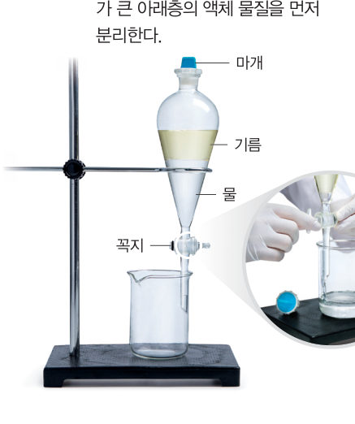
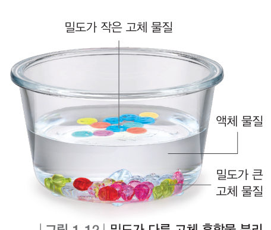
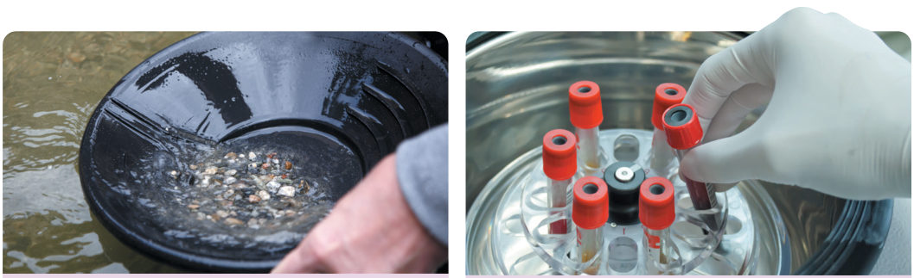
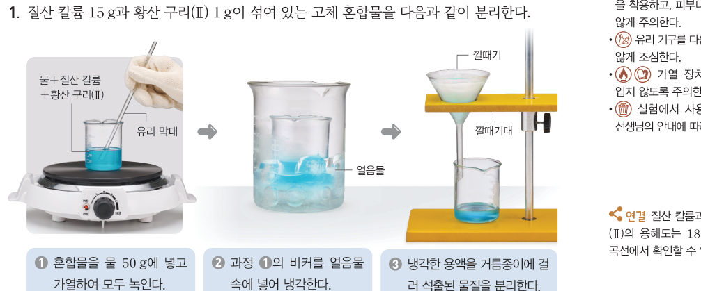
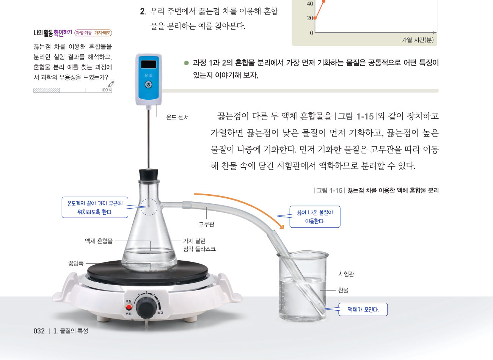
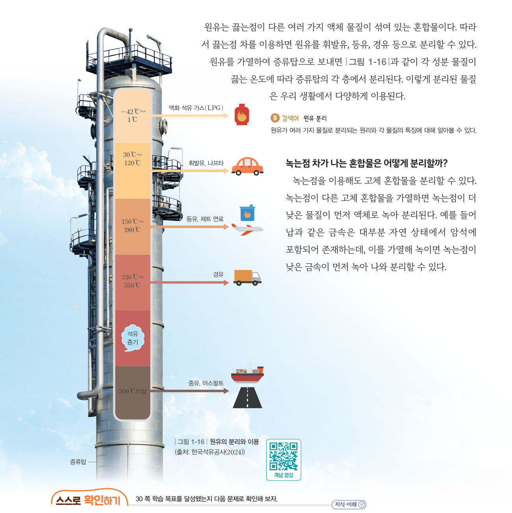

“기름이 너무 많은데?” 물질의 특성을 이용해 국에 뜬 기름을 어떻게 제거할 수 있을까? 가상 분별 깔때기, 얼음물 냉각, 증류 장치, 원유 증류탑으로 밀도·용해도·끓는점·녹는점 차를 이용한 분리를 해 보자.
🎯 이 단원을 배우면 — 물질의 특성을 이용해 혼합물을 분리하는 원리를 설명하고, 우리 주변에서 그 예를 찾을 수 있다.
교과서밀도 차가 나는 혼합물은 어떻게 분리할까? 30쪽
물과 기름처럼 서로 섞이지 않으면서 밀도가 다른 액체 혼합물은 층을 이룬다. 이때에는 스포이트나 ●분별 깔때기를 이용해 액체 물질을 분리할 수 있다.
밀도가 다른 고체 혼합물도 밀도 차를 이용해 분리할 수 있다. 고체 물질을 녹이지 않으면서 밀도가 두 고체 물질의 중간 정도인 액체 물질을 넣으면 그림 1-12와 같이 액체 물질보다 밀도가 작은 고체 물질은 위로 뜨고, 밀도가 큰 고체 물질은 아래로 가라앉는다.

●분별 깔때기마개를 열고 꼭지를 돌려 밀도가 큰 아래층의 액체 물질을 먼저 분리한다.

그림 1-12밀도가 다른 고체 혼합물 분리
가상 실험분별 깔때기로 물과 기름 분리하기
마개를 연 뒤 꼭지를 열어 아래층 물을 비커로 받아요. 경계면이 꼭지에 닿을 때 꼭지를 닫으면 물만 깨끗하게 분리돼요! 늦으면 기름이 섞이고, 너무 이르면 물이 남아요.
비커에 받은 물0 mL
비커에 섞인 기름0 mL
깔때기에 남은 물50 mL
1분별 깔때기에서 먼저 빠져나오는 액체는 이고, 그 까닭은 밀도가 더 때문이다.

그림 1-13밀도 차를 이용한 혼합물 분리의 예 — 혈액을 원심 분리기에 넣고 돌리면 성분이 밀도에 따라 나누어지고, ●사금이 섞인 모래를 쟁반에 담아 흐르는 물에 헹구면 밀도가 큰 금이 남는다.
💬우리 주변에서 밀도 차를 이용해 혼합물을 분리하는 예를 찾아보자.
해 보기용해도 차를 이용해 혼합물 분리하기 31쪽
설탕과 소금은 모두 물에 용해되는 물질이지만 같은 온도, 같은 양의 물에 용해되는 양은 서로 다르다. 용해도 차가 나는 고체 혼합물을 물에 넣고 가열하여 모두 녹였다가 냉각하면 온도에 따른 용해도 차가 큰 물질이 먼저 석출된다. 이렇게 석출된 물질을 거름 장치로 거르면 혼합물을 분리할 수 있다.

31쪽① 혼합물을 물 50 g에 넣고 가열하여 모두 녹인다. ② 비커를 얼음물 속에 넣어 냉각한다. ③ 냉각한 용액을 거름종이에 걸러 석출된 물질을 분리한다.
⚠️ 시약을 다룰 때 보안경을 착용하고, 피부나 옷에 닿지 않게 주의한다. 가열 장치에 화상을 입지 않도록 주의한다.
가상 실험질산 칼륨 15 g + 황산 구리(Ⅱ) 1 g, 물 50 g
온도 슬라이더로 용액을 식혀 보자. 물 50 g에 녹을 수 있는 최대량(용해도 × 0.5)보다 많은 만큼만 석출돼요. 18쪽 용해도 곡선과 연결해 생각해 보자.
1과정 ②에서 석출되는 물질은 이고, 0 ℃까지 냉각하면 약 g이 석출된다.
💬용해도 차를 이용한 혼합물 분리에서 석출되는 물질은 공통적으로 어떤 특징이 있는지 이야기해 보자.
그림 1-14 설탕 분리 사탕수수를 으깨 즙을 낸 뒤 가열 및 건조 등 여러 과정을 거쳐 설탕을 분리한다. 이처럼 용해도 차를 이용한 분리를 여러 번 반복하기도 한다(재결정).
해 보기끓는점 차를 이용한 혼합물 분리 알아보기 32쪽
물과 에탄올처럼 서로 잘 섞이지만 끓는점이 다른 액체 혼합물은 가열하면 분리할 수 있다. 끓는점이 다른 두 액체 혼합물을 그림 1-15와 같이 장치하고 가열하면 끓는점이 낮은 물질이 먼저 기화하고, 끓는점이 높은 물질이 나중에 기화한다. 먼저 기화한 물질은 고무관을 따라 이동해 찬물 속에 담긴 시험관에서 액화하므로 분리할 수 있다.

그림 1-15끓는점 차를 이용한 액체 혼합물 분리 — 온도 센서의 끝이 가지 부근에 위치하도록 한다.
가상 실험물과 에탄올 혼합물 50 mL 가열하기
[가열]을 누르면 온도 그래프가 그려지고 찬물 속 시험관에 액체가 모여요. 시험관은 구간이 바뀔 때마다 새것으로 바꿔요. ㉠~㉡, ㉢~㉣ 구간에서 모이는 물질을 확인해 보자.
1㉠~㉡ 구간에서 주로 기화하여 나오는 물질은 , ㉢~㉣ 구간에서는 이다.
💬우리 주변에서 끓는점 차를 이용해 혼합물을 분리하는 예를 찾고, 가장 먼저 기화하는 물질의 공통된 특징을 이야기해 보자.
교과서원유의 분리와 녹는점 차를 이용한 분리 33쪽
원유는 끓는점이 다른 여러 가지 액체 물질이 섞여 있는 혼합물이다. 원유를 가열하여 증류탑으로 보내면 그림 1-16과 같이 각 성분 물질이 끓는 온도에 따라 증류탑의 각 층에서 분리된다.
움직이는 그림 1-16원유 증류탑
증류탑은 아래가 뜨겁고 위로 갈수록 온도가 낮아요. 층을 눌러 그 층에서 액화해 나오는 물질과 이용을 알아보자. 끓는점이 높은 물질일수록 아래층에서 먼저 액화해요.
층을 눌러 보세요.

그림 1-16원유의 분리와 이용 (출처: 한국석유공사(2024))
녹는점 차가 나는 혼합물은 어떻게 분리할까? 녹는점이 다른 고체 혼합물을 가열하면 녹는점이 더 낮은 물질이 먼저 액체로 녹아 분리된다. 예를 들어 납과 같은 금속은 대부분 자연 상태에서 암석에 포함되어 존재하는데, 이를 가열해 녹이면 녹는점이 낮은 금속이 먼저 녹아 나와 분리할 수 있다.
스스로 확인하기30쪽 학습 목표를 달성했는지 확인해 보자 33쪽
1개념 확인 사금 채취는 물질의 ( ) 차를 이용해 혼합물을 분리한 것이고, 원유 분리는 물질의 ( ) 차를 이용해 혼합물을 분리한 것이다.
2사고력 휘발유, 등유, 경유 중 가장 먼저 액화하여 얻을 수 있는 물질은 이다. 그 까닭은?
🧩 두 번째 블록 · 힌트 조각 2 (33쪽)
녹말과 물의 혼합물을 가만히 두면 서로 섞이지 않고 ( )이 가라앉으므로 분리할 수 있다.
5분 테스트물질의 특성을 이용한 혼합물 분리
1① 스타이로폼과 모래의 혼합물을 물에 넣어 분리할 때 이용한 물질의 특성은 ② 밀도 비교: 가장 큰 것부터 순서대로 놓으시오.
스타이로폼
모래
물
③ 분별 깔때기 속 물과 기름의 밀도: 물 기름
2④ 불순물이 섞인 질산 칼륨을 가열하여 녹인 다음 냉각하면 깨끗한 질산 칼륨을 얻을 수 있다. 이때 이용하는 물질의 특성은 ( )에 따른 ( ) 차이다. ⑤ 황산 구리(Ⅱ)와 질산 칼륨의 혼합물을 (가) 가열해 녹이고 (나) 얼음물로 냉각한 뒤 (다) 걸렀다. 옳은 것을 모두 고르시오.
3⑥ 서로 잘 섞이는 액체 혼합물은 ( ) 차를 이용하여 분리할 수 있다. 물과 에탄올 혼합물을 가열하면 이 값이 낮은 에탄올이 먼저 기화한다. ⑦ 공기를 액체 상태로 만든 다음 가열할 때 가장 먼저 기화되어 분리되는 기체는? (A −183.0 ℃, B −185.8 ℃, C −195.8 ℃)
4혼합물을 분리할 때 이용하는 물질의 특성을 고르시오. (ㄱ. 밀도 ㄴ. 용해도 ㄷ. 끓는점)
⑧ 사금이 섞인 모래를 쟁반에 담아 흐르는 물에 헹구면 쟁반에 금만 남는다.
⑨ 사탕수수로부터 설탕을 분리한다.
⑩ 원유를 증류탑에 넣어 휘발유, 경유, 등유 등으로 분리한다.
스스로 정리하기물질의 특성을 이용한 혼합물 분리
2혼합물의 분리
⑴ 차: 섞이지 않는 액체는 분별 깔때기로, 고체는 중간 밀도의 액체로 분리한다. ⑵ 차: 높은 온도에서 녹인 뒤 냉각하면 온도에 따른 용해도 차가 큰 물질이 석출된다. ⑶ 끓는점 차: 가열하면 끓는점이 물질이 먼저 기화한다. (예: 원유의 분리) ⑷ 녹는점 차: 녹는점이 낮은 물질이 먼저 녹아 분리된다.
평가 기준
스스로 평가
지식·이해 물질의 특성을 이용해 혼합물을 분리하는 원리를 설명할 수 있는가?
과정·기능 용해도·끓는점 차를 이용한 분리 실험 결과를 해석할 수 있는가?
가치·태도 혼합물 분리의 예를 찾는 과정에서 과학의 유용성을 느꼈는가?
제출학생 정보 · 제출하기
모든 활동을 마친 뒤 제출하면 전체가 한 번에 채점되고 피드백이 나타나요. 답안은 선생님 스프레드시트(중2 탭)에 기록돼요.